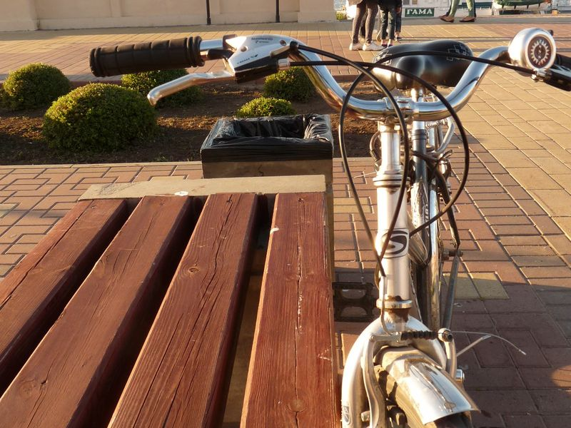

Велопрогулка «Тайны нижегородской
набережной»
Об истории, людях и достоянии Нижнего на велосипедной экскурсии с
прекрасными видами
Экскурсия Трипстера в Нижнем Новгороде
Нижний Новгород — город у двух больших русских рек Оки и Волги. И история его начиналась там, где высадились однажды, спустившись вниз по Оке, суда владимирского князя, ныне это место — Нижне-Волжская набережная. Гудки пароходов, крики чаек, плеск воды — когда-то здесь было людно и шумно. Сегодня это зона прогулок нижегородцев и гостей города. На этой вело-экскурсии вы насладитесь замечательными видами на место слияния двух рек, и на город, полюбуетесь достопримечательностями и узнаете об истории и жителях Нижнего.
Что вас ожидает
Я расскажу:
- об истории Нижнего Новгорода как места, куда всегда причаливали суда, парусные, бурлацкие, паровые, теплоходы и ракеты на подводных крыльях
- об уникальных инженерных сооружениях Нижнего, не имеющих аналогов в Европе, о нижегородском водопроводе и канализации на Ярмарке в том числе,
- о людях, которые создавали славу и богатство одного из самых ярких старинных русских городов, «кармана России», на протяжении нескольких веков, в том числе о купцах-старообрядцах, которые предпочитали жить и вести дела поближе к суете речного порта,
- о названиях рек, географическом положении, особенностях природы и ландшафта Нижнего Новгорода и окрестностей.
Таким образом, вы совместите активный отдых с познавательной экскурсией
узнаете
много нового о развитии Нижнего
и о его жителях, насладитесь впечатляющими видами и обязательно
влюбитесь
в историю нашего купеческого города.
Маршрут
- С площади Народного Единства мы поедем на велосипедах вдоль берега Волги, мимо катера «Герой» к подножию огромной Чкаловской лестницы, а затем — к старинной фабрике Колчина-Курбатова.
- Проедем всю старинную, богатую памятниками архитектуры улицу Рождественскую и
Благовещенский монастырь
- подпункт 1
- подпункт 2
- подпункт 3
- У берега Оки окунемся в патриархальную тишину старинной купеческой улицы Черниговской, увидим уникальный памятник архитектуры — Ромодановский вокзал.
- Закончим экскурсию у заброшенного уголка нижегородской старины с живописной водонапорной башней, старинной водокачкой и современными граффити, откуда вернемся к пункту проката или автобусной остановке.